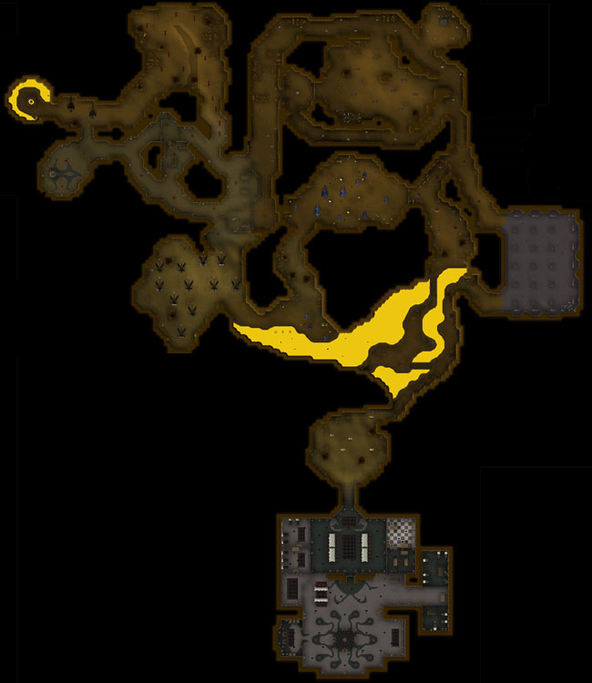
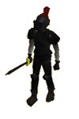
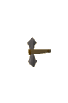

")
Taverley Dungeon (Members)
Warning | Introduction | Location | Points of Interest | Personalities
Quests | Monsters of the Dungeon | Miscellaneous
Quests | Monsters of the Dungeon | Miscellaneous
Warning
There are monsters in this dungeon that poison, breathe fire and inflict incredible amounts of damage on the unprepared. If you wish to venture deep into Taverley dungeon, please ensure you are well prepared, bringing equipment you are willing to lose.
Introduction

The deeper warriors venture into Taverley dungeon, the greater and more perilous the journey becomes. Starting with skeletons, adventurers may think their skills are not being challenged, until they face the black dragons that guard the end...
Location

Taverley is located fairly central in RuneScape, being north-west of Falador, and due east of Catherby, although you will need to navigate White Wolf Mountain to get to Taverley from the west.
Points of Interest

Please note that there are two Agility shortcuts: one to the blue dragon lair, the other to the area just before the hellhounds.
Taverley dungeon is huge! There are many monsters, item respawns and other interesting things to do down here. Aside from your standard monsters, Taverley dungeon includes chaos druids, who drop herbs a-plenty, blue dragons, which are always good to help your Crafting, and hellhounds, which are known to start many a warrior on Treasure Trails.
Aside from useful monsters, there are other features to the dungeon, such as the Black Knights' underground base.
If you are heading to the deepest areas of the dungeon, you will end up finding the Fire Obelisk and a ladder leading to the Water Obelisk. It is at these locations you are to bring your uncharged orbs and cast the relevant spell on the Obelisk to charge the orb.
Taverley Dungeon is one of the few places you can fish for lava eels, but only if you have the correct equipment.
If you are on the Druidic Ritual quest, you will need to venture a little way into the dungeon to find the Cauldron of Thunder.
Personalities
![[image]](../../img/main/kbase/npc/area_guides/chathead/velrak_the_explorer.gif) Velrak is a bold and daring explorer, but his recent expeditions have ended in his capture by the Black Knights. If you manage to gain access to his cell, he will provide a 'dusty key', which in turn is used to go deeper into the dungeon, as it opens the gate near the lesser demons.
|
![[image]](../../img/main/kbase/npc/area_guides/chathead/lord_daquarius1.gif) Lord Daquarius is the leader of this Black Knight underground base.
For those on the Wanted! quest, he will have information for you, but he may not be talkative: persuasion might be necessary. |
|
| Velrak is located in the Black Knights' jail. |
Quests
There are no quest start points in Taverley Dungeon.
Monsters of the Dungeon
![[image]](../../img/main/kbase/npc/area_guides/chaos_druid.gif) Chaos druids combine Magic with melee if they are under attack. While the Magic they use on you may not be damaging as such, you may find some of your combat-related stats get lowered if spells actually hit you. Chaos druids tend to drop grimy herbs, which can be very useful.
|
![[image]](../../img/main/kbase/npc/area_guides/ghost.gif) Ghosts are found in most dark areas of RuneScape, so it is no surprise that with Taverley dungeon's size, there are a few ghosts lurking in the corners.
|
|
| Chaos druids are one of the first things you will encounter in the dungeon; they are not far from the entrance. | Ghosts are found in the first tunnel/area of the dungeon, a short walk from the entrance. |
![[image]](../../img/main/kbase/npc/area_guides/suit_of_armour.gif) Standing outside the entrance to the Cauldron of Thunder room are two suits of armour. If you try to pass the gates, however, you will find these suits of armour are no mere decoration! They will attack you, defending the gates you wish to pass. You must fight them if you want to get in.
|
![[image]](../../img/main/kbase/npc/area_guides/poison_scorpion.gif) Scorpions in RuneScape are always to be watched out for, using their dangerous tails for vicious melee attacks. In Taverley Dungeon, the danger doesn't stop here: there is a high chance that the scorpions will poison you if they attack, so it is very wise to bring anti-poison.
|
|
| Poison scorpions are found in between the magic axes and chaos dwarfs. |
![[image]](../../img/main/kbase/npc/area_guides/skeleton.gif) Skeletons may look harmless and weak, but their lack of muscles is more than made up for by the potent magic that holds them together. If you choose to fight skeletons, you may notice the skeleton's bones will give way when crushing attacks are used.
|
![[image]](../../img/main/kbase/npc/area_guides/giant_bat.gif) There are plenty of giant bats in Taverley Dungeon. They tend to stay together in large swarms and are generally found in open spaces.
|
|
| Skeletons are found in the entrance area of Taverley dungeon. | As they prefer to keep their distance by flying above your head, you may find it easier to bring them down with Ranged attacks. |
![[image]](../../img/main/kbase/npc/area_guides/hill_giant.gif) Hill giants are large and fairly slow, but at Combat level 28, with a large cleaver, they should not be underestimated if you are a similar Combat level. Hill giants have a variety of drops, not forgetting they drop big bones to help your Prayer skill rise.
|

Black Knights are always plotting the next move they can make against the White Knights. Aside from lurking in their castle north of Falador, they have a secret underground base in Taverley dungeon.
|
|
| Hill giants can be found in the south of Taverley dungeon, just outside the Black Knights' base. | You can find this base and the Black Knights in it in the far south of the dungeon. |
|

Magic axes are not the easiest of enemies to understand. An axe is dangerous in the hand of any warrior, but these axes are magical and (unfortunately for passers by) they think for themselves and will happily attack you.
|
![[image]](../../img/main/kbase/npc/area_guides/monk_of_zamorak.gif) Monks that follow Zamorak must always be considered dangerous. They will use melee attacks against you if you wander into their area of worship.
|
|
| Magic axes can be found in the area to the east of the dungeon, in the area just before the chaos dwarfs. | This said, many adventurers to Taverley Dungeon don't see the monks of Zamorak, as they are located deep beyond the black demons and poison spiders. |
![[image]](../../img/main/kbase/npc/area_guides/jailer.gif) Those who wish to speak with Velrak the Explorer will find him in the Black Knights' jail, guarded by this Jailer. The Jailer won't accept bribes or anything to release him or let you in to talk to him, so you may need a sword to help persuade him...
|
![[image]](../../img/main/kbase/npc/area_guides/baby_blue_dragon.gif) Thankfully, baby blue dragons are not at the growth stage where they have the ability to breathe fire. This makes them ideal for people who are not willing to risk fighting fire-breathing dragons to get some practice in. They are useful for babydragon bones, and alternative Slayer monsters if you cannot cope with the larger blue dragons.
|
|
| Baby blue dragons are found just past the dusty key door. |
![[image]](../../img/main/kbase/npc/area_guides/chaos_dwarf.html) The majority of players who walk in search of the dusty key gate will find that chaos dwarfs will attack as they walk past. Chaos dwarfs are known to drop the 'muddy key' which opens a chest deep in the Wilderness holding treasures to reward those brave enough to take the journey.
|
![[image]](../../img/main/kbase/npc/area_guides/poison_spider.gif) Found in the deeper areas of the dungeon, past the black demons, these spiders can cause concern regardless of how strong you are. It is lucky if you escape them and are not poisoned, as they are very good at hunting and damaging their prey.
|
|
| You can find chaos dwarves near the lesser demons and dusty key gate. | It is highly recommended you bring anti-poison, as the poison from these spiders can inflict a lot of damage. |
![[image]](../../img/main/kbase/npc/area_guides/lesser_demon.gif) Just because they are a 'lesser' demon, it doesn't make them a 'lesser' danger. Lesser demons are very dangerous to the unprepared warrior, as they can inflict a lot of damage with their unnatural strength.
|
![[image]](../../img/main/kbase/npc/area_guides/blue_dragon.gif) Blue dragons are not to be underestimated. At level 111, with the power to breathe fire and inflict vast amounts of melee damage, blue dragons will have no problem killing the unprepared warrior. Ensure you bring an anti-dragonbreath shield if you wish to take one on with melee.
|
|
| Lesser demons are located just outside the dusty key gate. | Blue dragons are located in the area beyond the dusty key gate, or you can use the Agility shortcut from the entrance if you have level 70 Agility or more. |
![[image]](../../img/main/kbase/npc/area_guides/hellhound.gif) Wilder than your household pet by far, hellhounds will not obey your every command, nor are they man's best friend. Hellhounds use their powerful front claws to rake their opponents and gouge flesh, making them particularly strong melee opponents.
|
![[image]](../../img/main/kbase/npc/area_guides/black_demon.gif) You have seen lesser, you have seen greater, now meet the largest and most powerful of the demons that dwell in Taverley Dungeon - the black demon.
|
|
| Treasure hunters may note that hellhounds are known to occasionally drop level 3 clue scrolls. Hellhounds are located beyond the black demons, just before the black dragons. | Black demons can be found in the west of the Dungeon, just past the lava eel Fishing spots. |
![[image]](../../img/main/kbase/npc/area_guides/black_dragon.gif) All dragons are dangerous, but one of the most dangerous of the kind is the black dragon. Located at the end of Taverley Dungeon, black dragons wait for wandering adventurers to take the wrong turn into their area.
|
| If you wish to fight the dragons, ensure you take a anti-dragonbreath shield and some of your best armour, or bring items you don't mind losing. |
Miscellaneous
- The dungeon contains the Fire Obelisk and a ladder to the Water Obelisk, where you charge orbs for elemental battlestaves.
- Hellhounds are good for people hunting for level 3 Treasure Trails clue scrolls.
- Chaos druids are an easy way of gathering herbs.
- Use your Agility to your advantage. Level 70 Agility eliminates a lot of the walk and the need for a dusty key.

More articles in
Dungeons
|
|